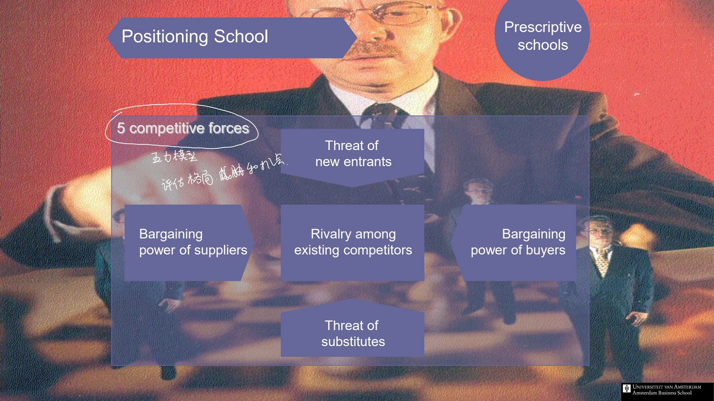

The framework
| Force | Pressure on the industry | Signals to examine |
|---|---|---|
| Rivalry among existing competitors | Competition can reduce prices or raise the cost of winning business. | Slow growth; similarly sized rivals; high fixed costs; difficult exit. |
| Threat of new entrants | The prospect of new capacity limits the returns incumbents can sustain. | Scale requirements; brand-building costs; access to distribution; government restrictions. |
| Bargaining power of suppliers | Input providers may capture value through higher prices or less favorable terms. | Concentrated supply; essential inputs; costly switching. |
| Bargaining power of buyers | Customers may demand lower prices or additional service. | Large buyers; little differentiation; low switching costs; price sensitivity. |
| Threat of substitutes | Another way of satisfying the same need can limit price and demand. | Attractive price–performance alternatives; low costs of changing the solution. |
Key distinctions
Define the boundary before rating the forces
Write down the focal product or service, the customer group and the geographical area. Then place each actor relative to that boundary. This simple discipline makes the analysis reviewable: a supplier to one business may be a competitor to another. Distinguish current evidence from a forecast and identify which observation supports each assessment.
Turn the map into a decision
An effective worksheet has one row per force and columns for the observation, mechanism, confidence, expected direction of change and strategic response. Finish with a short explanation of which pressures matter most to the decision at hand. A list of five labels is a starting structure; the reasoning connecting them to the choice is the analysis.
How to use it
- Define one industry boundary and one decision to investigate.
- For each force, record evidence and explain the mechanism rather than just assigning a score.
- Select the two or three findings that materially change the proposed choice.
- Revisit the same worksheet when assumptions or observed conditions change.
Keep in mind
Do not confuse a direct rival with a substitute. Avoid importing an industry-level conclusion unchanged into a firm-level assessment; connect the result to resources and positioning.
Why is a competitor list insufficient?
Reveal the explanation
It leaves out the other groups and alternatives that can constrain the industry's ability to retain value.
Read the classroom original
Complete pages from the supplied lecture slides. Select a page to read, enlarge or browse its extracted text. Page numbers refer to the PDF’s physical page order.

Further reading
Harvard Business School · Institute for Strategy and Competitiveness: The Five Forces — Supplementary explanation of the five pressures and their structural drivers.